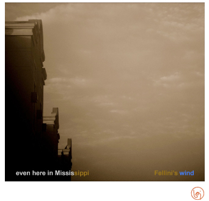

A Quarterly Journal
Jeffrey Woodward, Founder & General Editor
Volume 6, Number 2, June 2012

Gary LeBel
Cumming, Georgia, USA
Five Hundred Dollar Sneakers
I travel to make my living, often driving great distances to serve my clients. My tools are so delicate that the belly of the beast of a jetliner is their archenemy, and so they must be driven.
During a long drive lasting hours, you mull and turn over the soil a lot,
often about how absurd things are, in our nation and in every other nation under the sun. And regardless of the milieu, urban or rural, that absurdity nips at your heels every minute, every step of the way, relentless, as if it had apprenticed with horseflies. Speeding doesn't help, and neither does the radio, especially the news.
Sometimes you look in your rearview and think you're getting a break when it apparently took an exit or stopped at a rest area,
and you'll have a well-earned respite, but just when you're feeling comfortable and a little cocky, you look in the rearview and there it is again,
running its legs off in five hundred dollar sneakers with a leering, crooked smile full of bad teeth.